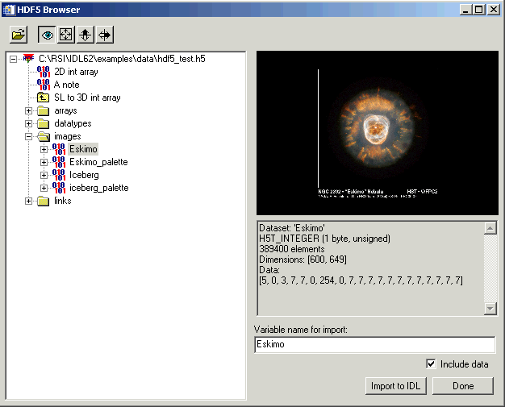
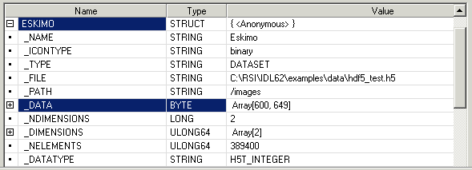

The H5_BROWSER fun ction presents a gra phical user interface for viewing and reading HDF5 files. The browser provides a tree view of the HDF5 file or files, a data preview window, and an information window for the selected objects. The browser may be created as either a selection dialog with Open/Cancel buttons, or as a standalone browser that can import data to the IDL main program level.
Note: This function is not part of the standard HDF5 interface, but is provided as a programming convenience.
Result = H5_BROWSER([ Files ] [, / DIALOG_READ ] )
If the DIALOG_READ keyword is specified then the Result is a structure containing the selected group or dataset (as described in the H5_PARSE function), or a zero if the Cancel button was pressed. If the DIALOG_READ keyword is not specified then the Result is the widget ID of the HDF5 browser.
An optional scalar string or string array giving the name of the files to initially open. Additional files may be opened interactively. If Files is not provided then the user is automatically presented with a File Open dialog upon startup.
If this keyword is set then the HDF5 browser is created as a modal Open/Cancel dialog instead of a standalone GUI. In this case, the IDL command line is blocked, and no further input is taken until the Open or Cancel button is pressed. If the GROUP_LEADER keyword is specified, then that widget ID is used as the group leader, otherwise a default group leader base is created.
All keywords to WIDGET_BASE, such as GROUP_LEADER and TITLE, are passed on to the top-level base.
The following example starts up the HDF5 browser on a sample file:
File = FILEPATH('hdf5_test.h5', SUBDIR=['examples','data'])
Result = H5_BROWSER(File)
When you call H5_BROWSER with the preceding code, an interface similar to the following appears.
|
 |
The following steps import image data into IDL.
| 1. | Navigate to the image data. Expand the top-level item, and the images item. |
| 2. | Select an image file. In this example, select Eskimo . A preview is automatically displayed. |
| 3. | Import the image data. Make sure the Include data option is selected, accept the default Variable name for import value and click Import to IDL . |
| 4. | I mport the image palette. Repeat the previous two steps, but select Eskimo palette . |
| 5. | Dismiss the dialog. After importing all your data, click Done . The structure Eskimo and Eskimo_Palette appear in the variable watch window. (Position your cursor in the command line and hit the enter key if you need to refresh the variable watch window to display the structures.) The following figure show a subset of the variable watch window with the Eskimo structure expanded and the _Data element selected. |
|
 |
| 6. | Access the imported data. Use structureName . fieldName syntax to access data from the structure. For example, the following lines of code display the image (with its associated palette) in an iImage display: |
IIMAGE, Eskimo._Data, RGB_TABLE=Eskimo_Palette._Data, /ORDER
The following table describes elements that are always available fields in a HDF5 Browser dialog.
|
Open HDF5 file |
Click on this button to bring up a file selection dialog. Multiple files may be selected for parsing. All selected files are added to the tree view. |
|
Show preview |
Select this button to preview the data within the preview window. One-dimensional datasets are shown as line plots. Two-dimensional datasets are shown as images, along with any provided image palettes. For three- or higher-dimensional datasets, a two-dimensional slice is shown. |
|
Fit in window |
Select this button to scale the data larger or smaller to fit within the preview window. The aspect ratio of the image will be unchanged. |
|
Flip vertical |
Select this button to flip the previewed data from top to bottom. |
|
Flip horizontal |
If this toggle button is selected, then the preview image will flipped from left to right. |
If the DIALOG_READ keyword is present then the following options are available:
|
Open |
Click on this button to close the HDF5 browser, and return an IDL structure containing the selected group or dataset, as described in the H5_PARSE function. |
|
Cancel |
Click on this button to close the HDF5 browser, and return a scalar zero for the result. |
If the DIALOG_READ keyword is not present then the following options are available:
|
Variable name for import |
Set this text string to the name of the IDL variable to construct when importing HDF5 data to IDL structures. If the entered name is not a valid IDL identifier, then a valid identifier will be constructed by converting all non-alphanumeric characters to underscores. |
|
Cancel |
Click on this button to close the HDF5 browser, and return a scalar zero for the result. |
|
Include data |
If selected, then all data within the selected datasets will be read in from the HDF5 file and included in the IDL structure. |
|
Import to IDL |
Click on this button to import the currently selected HDF5 object into the IDL main program level. Imported variables will consist of a nested hierarchy of IDL structures, as described in the H5_PARSE function. |
|
Done |
Close the HDF5 browser. |
|
5.6 |
Introduced |